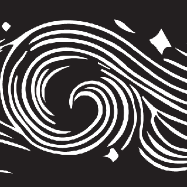
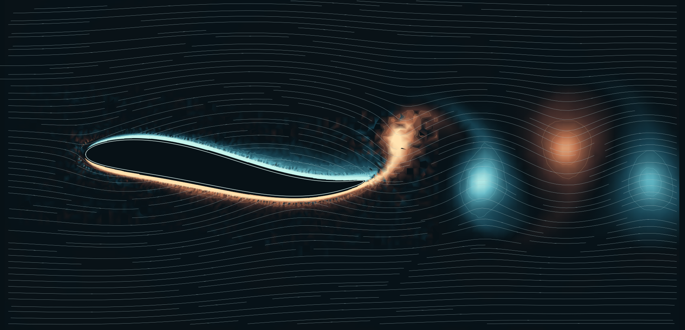
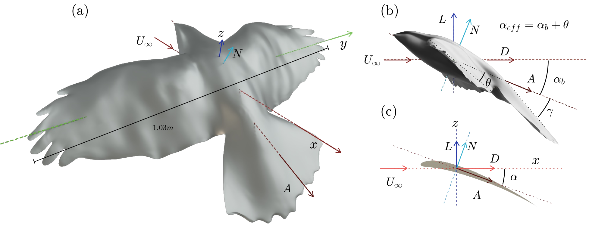
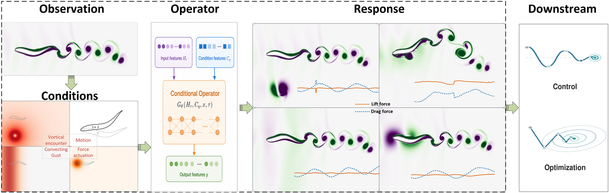
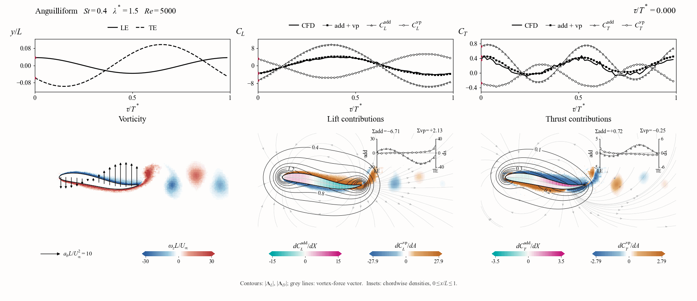
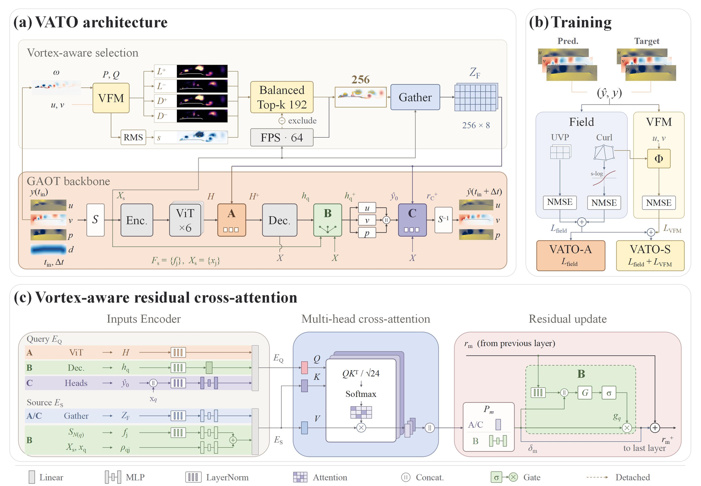
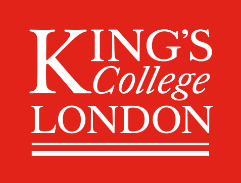

Bio-inspired motion & design
Flight, swimming and collective motion raise a common question: how do form, movement and the surrounding fluid work together? We study these interactions as a foundation for bio-inspired engineering.

KCL FlowLab Connect
KING’S COLLEGE LONDON
Learning from nature. Understanding the physics. Reimagining engineering with AI.
Discover our visionDrag to orbit · Scroll to zoomDrag to orbit · Pinch to zoom
METHODS, DISCOVERIES & OPEN RESEARCH
Explore selected studies and the wider publication record across bio-inspired motion, fluid physics and scientific AI.

01 / BIO-INSPIRED FLIGHT
Learning from flight in turbulent flow.

02 / LEARNING DYNAMICS
Predicting systems under changing conditions.

03 / SWIMMING PHYSICS
Connecting body motion, flow and propulsion.

04 / PHYSICS & LEARNING
Bringing physical knowledge into flow prediction.
Selected records, not an exhaustive catalogue. Preprints and the AIAA Journal in-press record are listed separately.
Full titles, authors & publication details ↗OUR RESEARCH VISION
We learn from how living systems move through fluids, investigate the physics of complex flows, and develop AI that connects data with physical understanding. Our aim is to turn those insights into new approaches to engineering design.
Flight, swimming and collective motion raise a common question: how do form, movement and the surrounding fluid work together? We study these interactions as a foundation for bio-inspired engineering.
Unsteady aerodynamics, vortex dynamics and turbulence connect motion with the loads and flow structures it creates. We develop methods to understand those connections in biological and engineered configurations.
How can learning methods use physical knowledge as well as data? We develop neural operators for changing physical systems and investigate how machine learning can support aerodynamic modelling and design.
A WIDER ENGINEERING HORIZON
Our wider interests span bio-inspired locomotion, aerodynamic design and wind-energy flows. The long-term ambition is to translate understanding of natural and physical systems into more capable engineering approaches. The studies featured here contribute methods and evidence along that path.
Explore the wider research recordResearch context: Juan Li / KCL ↗Xingxin Yang / KCL ↗Vedang Joshi / KCL ↗
OUR PEOPLE
We bring biological inspiration, fluid mechanics and computational intelligence together, with interests spanning locomotion, aerodynamics, collective motion and engineering design.
Exploring fluid mechanics, unsteady aerodynamics, vortex dynamics and wind energy.
Juan joined King’s in 2022 following research at Warwick and a PhD in Engineering Mechanics at Tsinghua University. Her work connects the physics of complex flows with computational modelling.
juan.li@kcl.ac.ukRESEARCH CONTRIBUTOR
Co-author of MarsVATO: vortex-force-aware transformer operators for unsteady separated aerofoil flows.
Explore the research ↗ENGINEERING RESEARCHER
Research on vortex-force mapping, Reynolds-averaged flows and the aerodynamics of bio-inspired motion.
King’s Research Portal ↗PHD RESEARCHER
Studying unsteady fluid dynamics, vortex shedding and swarming behaviour. Also a software engineer at Boeing UK.
KCL profile ↗PHD RESEARCHER
Combining machine learning and computational fluid dynamics for meta-wing design and aerodynamic optimisation.
KCL profile ↗RESEARCH CONTRIBUTOR
Co-author of MarsVATO and RA-VFM, connecting force-aware flow prediction with vortex-force analysis.
Explore the research ↗Biology. Physics.
Computation.
SELECTED PUBLICATIONS / 2022—2026
Selected work across flow physics, scientific learning and engineering applications.
Publications by Juan Li and collaborators, recorded in King’s Research Portal.
In order of first arXiv submission.
BIO-INSPIRED ENGINEERING / FLUID PHYSICS / SCIENTIFIC AI
We welcome conversations across biology, fluid mechanics and computation, and new ways to connect scientific understanding with engineering design.

King’s College London · London, UK